setwd("~/Desktop/Coding-Boot-Camp/Regression") #change to your own WD. you can do that by modifying the file path or go session (on the upper bar) --> set working directory)Regression
Getting everything set up
Set working directory
Change to your own working directory (WD) to save things like plots. You can do that by modifying the file path or go session (on the upper bar) –> set working directory). Working directories are important in R because they tell the computer where to look to grab information and save things like results. This can vary by project, script, etc. so it’s important to consistently have the appropriate WD. If you are unsure what your current WD is, you can use the getwd command in the console (usually the lower left hand pane) to get your WD.
Load Packages
if (!require("pacman")) install.packages("pacman") #run this if you don't have pacman
library(pacman)
pacman::p_load(tidyverse, ggpubr, broom, kableExtra, reactable, datarium, car,corrplot, DT, install = T)
#use pacman to load packages quickly For this script, and here forward, We use pacman to load in all of our packages rather than using the iterative if (!require("PACKAGE")) install.packages("PACKAGE") set-up. There’s still some merit to using that if loading in packages in a certain order creates issues (e.g.,tidyverse and brms in a certain fashion).
Get our plot aesthetics set-up
This is a super quick and easy way to style our plots without introduce a vile amount of code lines to each chunk!
palette_map = c("#3B9AB2", "#EBCC2A", "#F21A00")
palette_condition = c("#ee9b00", "#bb3e03", "#005f73")
plot_aes = theme_classic() + #
theme(legend.position = "top",
legend.text = element_text(size = 12),
text = element_text(size = 16, family = "Futura Medium"),
axis.text = element_text(color = "black"),
axis.line = element_line(colour = "black"),
axis.ticks.y = element_blank())Build Relevant Functions
Using stuff like summary functions allows for us to present results in a clean, organized manner. For example, we can trim superfluous information from model output when sharing with collaborators among other things.
table_model = function(model_data,reference = "Intercept") {
model_data %>%
tidy() %>%
rename("SE" = std.error,
"t" = statistic,
"p" = p.value) %>%
DT::datatable()
}Load data
Since we are using an existing dataset in R, we don’t need to do anything fancy here. However, when normally load in data you can use a few different approaches. In most reproducible scripts you’ll see people use nomenclature similar to df, data, dataframe, etc. to denote a dataframe. If you are working with multiple datasets, it’s advisable to call stuff by a intuitive name that allows you to know what the data actually is. For example, if I am working with two different corpora (e.g., Atlantic and NYT Best-Sellers) I will probably call the Atlantic dataframe atlantic and the NYT Best-sellers NYT for simplicity and so I don’t accidentally write over files.
For example, if your WD is already set and the data exists within said directory you can use: df <- read_csv(MY_CSV.csv)
If the data is on something like Github you can use: df <- read_csv('https://raw.githubusercontent.com/scm1210/Language_Lab_Repro/main/Atlantic_Cleaned_all_vars.csv') #read in the data.
If you are working in one directory and need to call something for another directory you can do something like: Atlantic_FK <- read_csv("~/Desktop/working-with-lyle/Atlantic/Atlantic_flesch_kinkaid_scores.csv")
There are also other packages/functions that allow you to read in files with different extensions such as haven::read_sav() to read in a file from SPSS or rjson:: fromJSON(file="data.json")to read in a json file. If you want to learn more about how to reading in different files you can take a peek at this site.
For the first half, we are going to be using the marketing dataset which is built into the R package datarium and we are going to call it df.
Brief Description
The simple linear regression is used to predict a quantitative outcome y on the basis of one single predictor variable x. The goal is to build a mathematical model (or formula) that defines y as a function of the x variable.
Once, we built a statistically significant model, it’s possible to use it for predicting future outcome on the basis of new x values.
Consider that, we want to evaluate the impact of advertising budgets of three medias (youtube, facebook and newspaper) on future sales. This example of problem can be modeled with linear regression.
The basics
The mathematical formula of the linear regression can be written as y = b0 + b1*x + e, where:
b0andb1are known as the regression beta coefficients or parameters:b0is the intercept (sometimes referred to as the constant) of the regression line; that is the predicted value whenx = 0.b1is the slope of the regression line.
eis the error term (also known as the residual errors – the distance between the observed data and the expected aka the line of best fit), the part of y that can be explained by the regression model
The figure below illustrates the linear regression model, where:
the best-fit regression line is in blue
the intercept (b0) and the slope (b1) are shown in legend
the error terms (e) are represented by vertical red lines extending from the regression line
# Create some example data
x <- rnorm(100, 0, 100)
y <- rnorm(100, 0, 30)
# Fit a linear regression model
fit <- lm(y ~ x)
# Plot the data points
plot(x, y, main = "Linear Regression Example")
# Add the regression line in blue
abline(fit, col = "blue")
# Add the intercept and slope in green
legend("topleft",
legend = paste0("b0 = ", round(coef(fit)[1], 2), ", b1 = ", round(coef(fit)[2], 2)),
col = "blue", lty = 1)
# Add the error terms in red
y_hat <- predict(fit)
segments(x, y, x, y_hat, col = "red")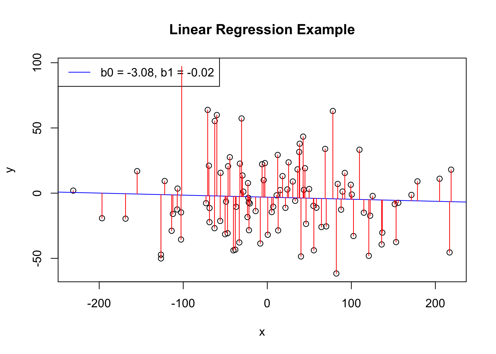
From the scatter plot above, it can be seen that not all the data points fall exactly on the fitted regression line. Some of the points are above the blue curve and some are below it; overall, the residual errors (e) have approximately mean zero.
The sum of the squares of the residual errors are called the Residual Sum of Squares or RSS.
The average variation of points around the fitted regression line is called the Residual Standard Error (RSE; often just referred to as the standard error [SE]). This is one the metrics used to evaluate the overall quality of the fitted regression model. The lower the RSE, the better it is.
Since the mean error term is zero, the outcome variable y can be approximately estimated as follow:
y ~ b0 + b1*x
Mathematically, the beta coefficients (b0 and b1) are determined so that the RSS is as minimal as possible. This method of determining the beta coefficients is technically called least squares regression or ordinary least squares (OLS) regression.
Once, the beta coefficients are calculated, a t-test is performed to check whether or not these coefficients are significantly different from zero. A non-zero beta coefficients means that there is a significant relationship between the predictors (x) and the outcome variable (y).
Getting started
Load in data
# Load the package
data("marketing", package = "datarium")
head(marketing, 4) youtube facebook newspaper sales
1 276.12 45.36 83.04 26.52
2 53.40 47.16 54.12 12.48
3 20.64 55.08 83.16 11.16
4 181.80 49.56 70.20 22.20For this dataset we are interested in predicting sales on the basis of advertising budget spent on youtube.
Data visualization
Now that we have our research question mapped out we can visually represent our data doing the following:
Create a scatter plot displaying the sales units versus youtube advertising budget.
Add a smoothed line
ggplot(marketing, aes(x = youtube, y = sales)) +
geom_point() +
stat_smooth() +
plot_aes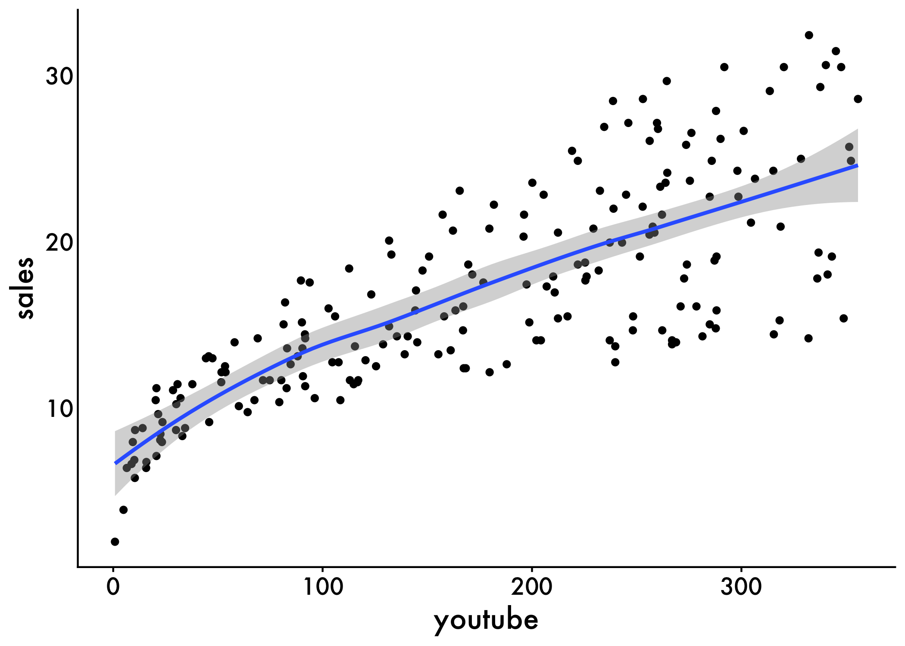
The graph above suggests a linearly increasing relationship between the sales and the youtube variables. This is a good thing, because, one important assumption of the linear regression is that the relationship between the outcome and predictor variables is linear and additive.
It’s also possible to compute the correlation coefficient between the two variables using the R function cor():
cor(marketing$sales, marketing$youtube)[1] 0.7822The correlation coefficient measures the level of the association between two variables x and y. Its value ranges between -1 (perfect negative correlation: when x increases, y decreases) and +1 (perfect positive correlation: when x increases, y increases).
A value closer to 0 suggests a weak relationship between the variables. A low correlation (-0.2 < x < 0.2) probably suggests that much of variation of the outcome variable (y) is not explained by the predictor (x). In such case, we should probably look for better predictor variables. Also want to note that the ‘size’ of correlations also depends on the field you’re working in and the nature of the data. For example, a correlation of (-0.2 < x < 0.2) for working with language data may be considered sizable if there are a ton of observations :). Additionally, if your correlation coefficient is too large, then you start to run into issues with multicollinearlity (or measuring the same thing), but more on that later!
In our example, the correlation coefficient is large enough, so we can continue by building a linear model of y as a function of x.
Building the model
The simple linear regression tries to find the best line to predict sales on the basis of youtube advertising budget.
The linear model equation can be written as follow: sales = b0 + b1 * youtube
The R function lm() can be used to determine the beta coefficients of the linear model:
model <- lm(sales ~ youtube, data = marketing)
table_model(model)Interpretation
From the output above:
the estimated regression line equation can be written as follow:
sales = 8.44 + 0.048*youtubethe intercept (
b0) is 8.44. It can be interpreted as the predicted sales unit for a zero youtube advertising budget. Recall that, we are operating in units of thousand dollars. This means that, for a youtube advertising budget equal zero, we can expect a sale of 8.44 *1000 = 8440 dollars.the regression beta coefficient for the variable youtube (b1), also known as the slope, is 0.048. This means that, for a youtube advertising budget equal to 1000 dollars, we can expect an increase of 48 units (0.048 * 1000) in sales. That is,
sales = 8.44 + 0.048*1000 = 56.44 units. As we are operating in units of thousand dollars, this represents a sale of 56440 dollars.
Regression Line
To add the regression line onto the scatter plot, you can use the function stat_smooth() [ggplot2]. By default, the fitted line is presented with confidence interval around it. The confidence bands reflect the uncertainty about the line. If you don’t want to display it, specify the option se = FALSE in the function stat_smooth().
ggplot(marketing, aes(youtube, sales)) +
geom_point() +
stat_smooth(method = lm) +
plot_aes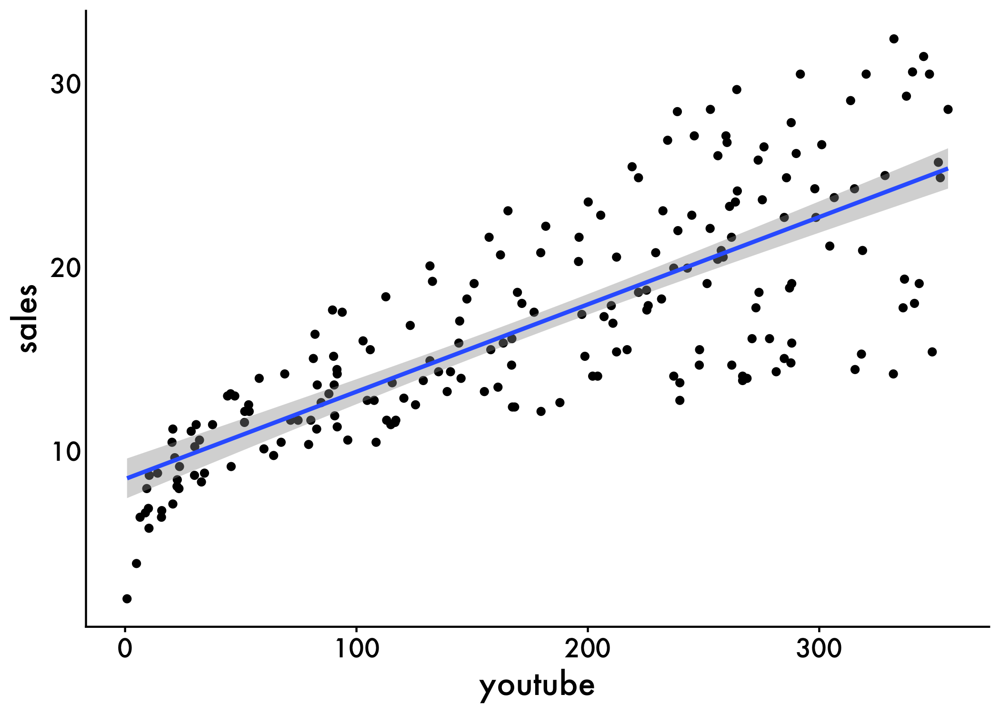
You can also paste your model coefficients onto the graph too! This makes it super easy to share our results
plot <- ggplot(marketing, aes(youtube, sales)) +
geom_point() +
stat_smooth(method = lm) +
plot_aes
model <- lm(sales ~ youtube, data = marketing)
model_pvalue <- summary(model)$coefficients[2, 4]
y_max <- max(marketing$sales)
plot +
geom_text(aes(x=0, y=y_max, label=paste("Youtube: ", format(coef(model)[2], digits=2), " p = ", format(model_pvalue, digits=2))),
color="dodgerblue3", size=5 ,hjust = 0)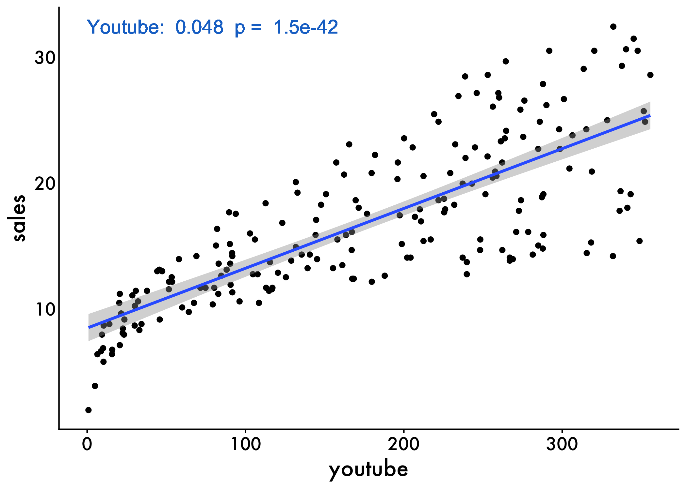
Model Assessment
In the previous section, we built a linear model of sales as a function of youtube advertising budget: sales = 8.44 (intercept) + 0.048*youtube.
Before using this formula to predict future sales, you should make sure that this model is statistically significant, that is:
there is a statistically significant relationship between the predictor and the outcome variables
the model that we built fits very well the data in our hand.
In this section, we’ll describe how to check the quality of a linear regression model.
Model Summary
We can start exploring our model by displaying the statistical summary of the model using the R function summary()
The summary outputs shows 6 components, including:
Call. Shows the function call used to compute the regression model.
Residuals. Provide a quick view of the distribution of the residuals, which by definition have a mean zero. Therefore, the median should not be far from zero, and the minimum and maximum should be roughly equal in absolute value.
Coefficients. Shows the regression beta coefficients and their statistical significance. Predictor variables, that are significantly associated to the outcome variable, are marked by stars.
Residual standard error (RSE), R-squared (R2) and the F-statistic are metrics that are used to check how well the model fits to our data. The most relevant here is R-squared, which tells us how much variance our model explains or how much information it can provide to our prediction!
summary(model)
Call:
lm(formula = sales ~ youtube, data = marketing)
Residuals:
Min 1Q Median 3Q Max
-10.06 -2.35 -0.23 2.48 8.65
Coefficients:
Estimate Std. Error t value Pr(>|t|)
(Intercept) 8.43911 0.54941 15.4 <2e-16 ***
youtube 0.04754 0.00269 17.7 <2e-16 ***
---
Signif. codes: 0 '***' 0.001 '**' 0.01 '*' 0.05 '.' 0.1 ' ' 1
Residual standard error: 3.91 on 198 degrees of freedom
Multiple R-squared: 0.612, Adjusted R-squared: 0.61
F-statistic: 312 on 1 and 198 DF, p-value: <2e-16Coefficient significance
The coefficients table, in the model statistical summary, shows:
the estimates of the beta coefficients
the standard errors (SE), which defines the accuracy of beta coefficients. For a given beta coefficient, the SE reflects how the coefficient varies under repeated sampling. It can be used to compute the confidence intervals and the t-statistic.
the t-statistic and the associated p-value, which defines the statistical significance of the beta coefficients.
t-statistic and p-values:
For a given predictor, the t-statistic (and its associated p-value) tests whether or not there is a statistically significant relationship between a given predictor and the outcome variable, that is whether or not the beta coefficient of the predictor is significantly different from zero.
The statistical hypotheses are as follow:
Null hypothesis (H0): the coefficients are equal to zero (i.e., no relationship between x and y)
Alternative Hypothesis (Ha): the coefficients are not equal to zero (i.e., there is some relationship between x and y)
Mathematically, for a given beta coefficient (b), the t-test is computed as t = (b - 0)/SE(b), where SE(b) is the standard error of the coefficient b. The t-statistic measures the number of standard deviations that b is away from 0. Thus a large t-statistic will produce a small p-value.
The higher the t-statistic (and the lower the p-value), the more significant the predictor. The symbols to the right visually specifies the level of significance. The line below the table shows the definition of these symbols; one star means 0.01 < p < 0.05. The more the stars beside the variable’s p-value, the more significant the variable.
A statistically significant coefficient indicates that there is an association between the predictor (x) and the outcome (y) variable.
In our example, both the p-values for the intercept and the predictor variable are highly significant, so we can reject the null hypothesis and accept the alternative hypothesis, which means that there is a significant association between the predictor and the outcome variables.
The t-statistic is a very useful guide for whether or not to include a predictor in a model. High t-statistics (which go with low p-values near 0) indicate that a predictor should be retained in a model, while very low t-statistics indicate a predictor could be dropped (P. Bruce and Bruce 2017).
Standard errors and confidence intervals
The standard error measures the variability/accuracy of the beta coefficients. It can be used to compute the confidence intervals of the coefficients. Frequentest approach confidence intervals should be interpreted as:
Confidence Level: The first thing to understand is the confidence level associated with the interval. For example, if you have a 95% confidence interval, this means that if you were to repeat the sampling and estimation process many times, 95% of those intervals would contain the true population parameter.
Interval Range: The interval itself is a range of values, usually expressed as “estimate ± margin of error.” For example, if the estimate is 10 and the margin of error is 2, the interval would be 8 to 12. This means that we are 95% confident that the true parameter value falls within this range.
Uncertainty: It’s important to understand that the interval provides a range of plausible values, but it does not tell us the exact value of the parameter. There is always some uncertainty associated with the estimate.
Sample Size: The width of the interval depends on the sample size and the variability of the data. A larger sample size generally leads to a narrower interval, while more variability leads to a wider interval.
Relevance: Finally, it’s important to consider the context of the problem and whether the interval is relevant for making decisions. If the interval is too wide to provide useful information, it may be necessary to collect more data or use a different statistical method. Additionally, it’s important to consider any assumptions or limitations of the statistical model used to construct the interval.
For example, the 95% confidence interval for the coefficient b1 is defined as b1 +/- 2*SE(b1), where:
the lower limits of b1 = b1 - 2SE(b1) = 0.047 - 20.00269 = 0.042
the upper limits of b1 = b1 + 2SE(b1) = 0.047 + 20.00269 = 0.052
That is, there is approximately a 95% chance that the interval [0.042, 0.052] will contain the true value of b1. Similarly the 95% confidence interval for b0 can be computed as b0 +/- 2*SE(b0).
To get these information, simply type confint(model):
confint(model) 2.5 % 97.5 %
(Intercept) 7.35566 9.52256
youtube 0.04223 0.05284Model accuracy
Once you identified that, at least, one predictor variable is significantly associated the outcome, you should continue the diagnostic by checking how well the model fits the data. This process is also referred to as the goodness-of-fit
The overall quality of the linear regression fit can be assessed using the following three quantities, displayed in the model summary:
- The Residual Standard Error (RSE).
- The R-squared (R2)
- F-statistic
Residual Standard Error
The RSE (also known as the model sigma) is the residual variation, representing the average variation of the observations points around the fitted regression line. This is the standard deviation of residual errors.
RSE provides an absolute measure of patterns in the data that can’t be explained by the model. When comparing two models, the model with the small RSE is a good indication that this model fits the best the data.
Dividing the RSE by the average value of the outcome variable will give you the prediction error rate, which should be as small as possible.
In our example, RSE = 3.91, meaning that the observed sales values deviate from the true regression line by approximately 3.9 units in average.
Whether or not an RSE of 3.9 units is an acceptable prediction error is subjective and depends on the problem context. However, we can calculate the percentage error. In our data set, the mean value of sales is 16.827, and so the percentage error is 3.9/16.827 = 23%.
Get the prediciton error
sigma(model)*100/mean(marketing$sales)[1] 23.24R-squared and Adjusted R-squared:
The R-squared (R2) ranges from 0 to 1 and represents the proportion of information (i.e. variation) in the data that can be explained by the model. The adjusted R-squared adjusts for the degrees of freedom.
The R2 measures, how well the model fits the data. For a simple linear regression, R2 is the square of the Pearson correlation coefficient.
A high value of R2 is a good indication. However, as the value of R2 tends to increase when more predictors are added in the model, such as in multiple linear regression model, you should mainly consider the adjusted R-squared, which is a penalized R2 for a higher number of predictors.
An (adjusted) R2 that is close to 1 indicates that a large proportion of the variability in the outcome has been explained by the regression model.
A number near 0 indicates that the regression model did not explain much of the variability in the outcome.
F-Statistic
The F-statistic gives the overall significance of the model. It assess whether at least one predictor variable has a non-zero coefficient.
In a simple linear regression, this test is not really interesting since it just duplicates the information in given by the t-test, available in the coefficient table. In fact, the F test is identical to the square of the t test: 312.1 = (17.67)^2. This is true in any model with 1 degree of freedom.
The F-statistic becomes more important once we start using multiple predictors as in multiple linear regression.
A large F-statistic will corresponds to a statistically significant p-value (p < 0.05). In our example, the F-statistic equal 312.14 producing a p-value of 1.46e-42, which is highly significant.
Multiple Regression
Multiple linear regression is an extension of simple linear regression used to predict an outcome variable (y) on the basis of multiple distinct predictor variables (x).
With three predictor variables (x), the prediction of y is expressed by the following equation:
y = b0 + b1*x1 + b2*x2 + b3*x3
Load in the data
Again, we’ll use the marketing data set [datarium package], which contains the impact of the amount of money spent on three advertising medias (youtube, facebook and newspaper) on sales.
data("marketing", package = "datarium")
head(marketing, 4) youtube facebook newspaper sales
1 276.12 45.36 83.04 26.52
2 53.40 47.16 54.12 12.48
3 20.64 55.08 83.16 11.16
4 181.80 49.56 70.20 22.20Build our model
We want to build a model for estimating sales based on the advertising budget invested in youtube, facebook and newspaper, as follow:
sales = b0 + b1*youtube + b2*facebook + b3*newspaper
model <- lm(sales ~ youtube + facebook + newspaper, data = marketing)
summary(model)
Call:
lm(formula = sales ~ youtube + facebook + newspaper, data = marketing)
Residuals:
Min 1Q Median 3Q Max
-10.59 -1.07 0.29 1.43 3.40
Coefficients:
Estimate Std. Error t value Pr(>|t|)
(Intercept) 3.52667 0.37429 9.42 <2e-16 ***
youtube 0.04576 0.00139 32.81 <2e-16 ***
facebook 0.18853 0.00861 21.89 <2e-16 ***
newspaper -0.00104 0.00587 -0.18 0.86
---
Signif. codes: 0 '***' 0.001 '**' 0.01 '*' 0.05 '.' 0.1 ' ' 1
Residual standard error: 2.02 on 196 degrees of freedom
Multiple R-squared: 0.897, Adjusted R-squared: 0.896
F-statistic: 570 on 3 and 196 DF, p-value: <2e-16Interpret
In our example, it can be seen that p-value of the F-statistic is < 2.2e-16, which is highly significant. This means that, at least, one of the predictor variables is significantly related to the outcome variable.
To see which predictor variables are significant, you can examine the coefficients table, which shows the estimate of regression beta coefficients and the associated t-statistic p-values:
table_model(model)For a given the predictor, the t-statistic evaluates whether or not there is significant association between the predictor and the outcome variable, that is whether the beta coefficient of the predictor is significantly different from zero.
It can be seen that, changing in youtube and facebook advertising budget are significantly associated to changes in sales while changes in newspaper budget is not significantly associated with sales.
For a given predictor variable, the coefficient (b) can be interpreted as the average effect on y of a one unit increase in predictor, holding all other predictors fixed.
For example, for a fixed amount of youtube and newspaper advertising budget, spending an additional 1 000 dollars on facebook advertising leads to an increase in sales by approximately 0.1885*1000 = 189 sale units, on average.
The youtube coefficient suggests that for every 1 000 dollars increase in youtube advertising budget, holding all other predictors constant, we can expect an increase of 0.045*1000 = 45 sales units, on average.
We found that newspaper is not significant in the multiple regression model. This means that, for a fixed amount of youtube and newspaper advertising budget, changes in the newspaper advertising budget will not significantly affect sales units.
As the newspaper variable is not significant, it is possible to remove it from the model:
model <- lm(sales ~ youtube + facebook, data = marketing)
summary(model)
Call:
lm(formula = sales ~ youtube + facebook, data = marketing)
Residuals:
Min 1Q Median 3Q Max
-10.557 -1.050 0.291 1.405 3.399
Coefficients:
Estimate Std. Error t value Pr(>|t|)
(Intercept) 3.50532 0.35339 9.92 <2e-16 ***
youtube 0.04575 0.00139 32.91 <2e-16 ***
facebook 0.18799 0.00804 23.38 <2e-16 ***
---
Signif. codes: 0 '***' 0.001 '**' 0.01 '*' 0.05 '.' 0.1 ' ' 1
Residual standard error: 2.02 on 197 degrees of freedom
Multiple R-squared: 0.897, Adjusted R-squared: 0.896
F-statistic: 860 on 2 and 197 DF, p-value: <2e-16Finally, our model equation can be written as follow: sales = 3.5 + 0.045*youtube + 0.187*facebook.
The confidence interval of the model coefficient can be extracted as follow:
confint(model) 2.5 % 97.5 %
(Intercept) 2.80841 4.2022
youtube 0.04301 0.0485
facebook 0.17214 0.2038Visualize the regression model
# Create a data frame with the actual values and predicted values
df <- data.frame(sales = marketing$sales, predicted_sales = predict(model))
# Create a scatterplot with the line of best fit
plot <-
ggplot(marketing, aes(x = youtube + facebook, y = sales)) +
geom_point() +
geom_smooth(method = "lm", formula = y ~ x, se = T) +
labs(x = "YouTube + Facebook", y = "Sales") +
ggtitle("Actual vs. Predicted Sales") +
plot_aes
youtube_pvalue <- summary(model)$coefficients[2, 4]
fbook_pvalue <- summary(model)$coefficients[3, 4]
y_max <- max(marketing$sales)
plot +
geom_text(aes(x=0, y=y_max, label=paste("Youtube: ", format(coef(model)[2], digits=2), " p = ", format(model_pvalue, digits=2))),
color="red", size=5 ,hjust = 0) +
geom_text(aes(x=0, y=y_max-5, label=paste("Facebook: ", format(coef(model)[3], digits=2), " p = ", format(model_pvalue, digits=2))),
color="dodgerblue2", size=5 ,hjust = 0) 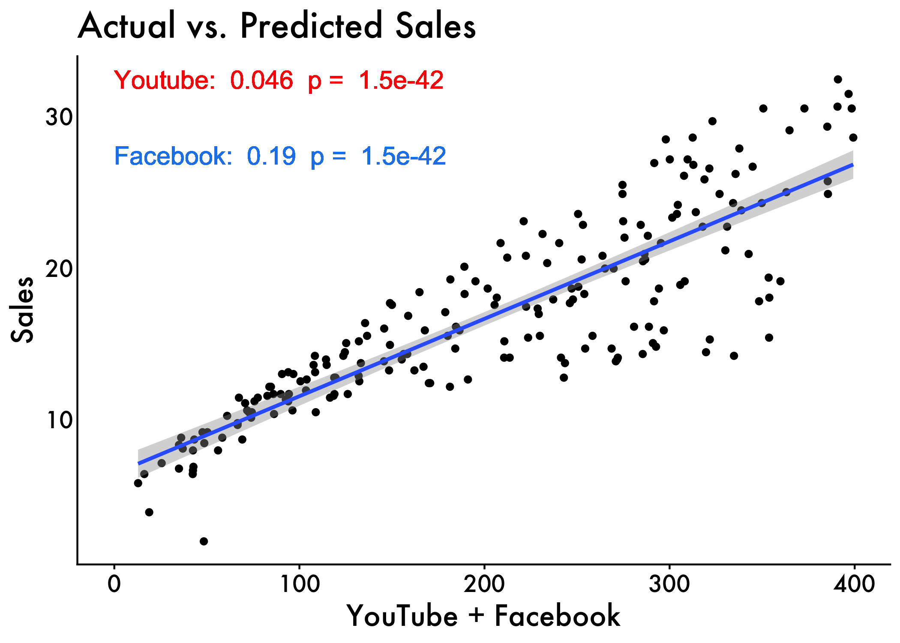
High-level example
Now, we’ll see what look to scale example at the highest level. For this script we are going to take a look at how different language variables from Presidential Inaugural Addresses correlate with one another. These speeches were retrieved from the NLTK corpus via python and analyzed using LIWC, spaCY, and NLTK.
Load the data
inaug <- read_csv('https://raw.githubusercontent.com/scm1210/Summer-Coding/main/data/Inaug_ALL_VARS.csv') #read in the data
inaug <- inaug %>% mutate(we_i_ratio = we/i)
tidy_df_Inaug<- inaug %>%
group_by(year) %>% ###grouping by the year
summarise_at(vars("WPS","readability","grade_level",'i','we','pronoun','det','syllables_per_word','syllables_per_sentence', "% words POS possessive","% words 'of'", "Contractions","we_i_ratio"), funs(mean, std.error),) #pulling the means and SEs for our variables of interest
# Get the mean values for the first year in the dataset
year_means <- tidy_df_Inaug %>%
filter(year == 1789)
tidy_df_Inaug$i_centered <- tidy_df_Inaug$i_mean - year_means$i_mean
tidy_df_Inaug$WPS_centered <- tidy_df_Inaug$WPS_mean - year_means$WPS_mean
tidy_df_Inaug$we_centered <-tidy_df_Inaug$we_mean - year_means$we_mean
tidy_df_Inaug$pronoun_centered <-tidy_df_Inaug$pronoun_mean - year_means$pronoun_mean
tidy_df_Inaug$pos_centered <-tidy_df_Inaug$`% words POS possessive_mean` - year_means$`% words POS possessive_mean`
tidy_df_Inaug$of_centered <-tidy_df_Inaug$`% words 'of'_mean`- year_means$`% words 'of'_mean`
tidy_df_Inaug$con_centered <-tidy_df_Inaug$Contractions_mean - year_means$Contractions_mean
tidy_df_Inaug$det_centered <-tidy_df_Inaug$det_mean - year_means$det_meanVariable Description
Flesch-Kincaid Ease of Readability: higher scores indicate material that is easier to read; lower numbers mark passages that are more difficult to read. Calculated using spaCy in python.
The Flesch–Kincaid Grade Level Score: presents a score as a U.S. grade level, making it easier for teachers, parents, librarians, and others to judge the readability level of various books and texts.Calculated using spaCy in python.
I-usage: First-person singular pronoun usage (% of total words). Calculated using LIWC.
We-usage: First-person plural pronoun usage (% of total words). Calculated using LIWC.
Pronoun-usage: Overall pronoun usage (% of total words). Calculated using LIWC.
Possessive-usage:First-person singular pronoun usage (% of total words). Calculated using NLTK POS, PRP, and PRP$ parser
Of-usage: Usage of the word ‘of’ (% of total words). Calculated using NLTK parser.
Contraction-usage: Usage of 85 most common contractions in English (% of total words). Calculated using custom LIWC dictionary.
Determiners-usage: Determiner usage (% of total words). Calculated using LIWC.
Summary Stats
years
inaug %>%
select(year) %>%
range()[1] 1789 2021Raw count of Speeches
inaug %>%
select(Filename) %>%
dplyr::summarize(n = n()) %>%
DT::datatable()Speeches per year
inaug %>%
select(Filename,year) %>%
unique() %>%
group_by(year) %>%
dplyr::summarize(n = n()) %>%
DT::datatable()Regression models
Inaugural Addresses
I-usage
i_centered <- lm(i_centered ~ year, data = tidy_df_Inaug)
table_model(i_centered) | term | estimate | SE | t | p |
|---|---|---|---|---|
| (Intercept) | 11.9676 | 3.718 | 3.219 | 0.0021 |
| Original Publication year | -0.0077 | 0.002 | -3.926 | 0.0002 |
We-usage
we_centered <- lm(we_centered ~ year, data = tidy_df_Inaug)
table_model(we_centered) | term | estimate | SE | t | p |
|---|---|---|---|---|
| (Intercept) | -49.4826 | 4.3154 | -11.47 | 0 |
| Original Publication year | 0.0278 | 0.0023 | 12.29 | 0 |
Pronouns
pronoun_centered <- lm(pronoun_centered ~ year, data = tidy_df_Inaug)
table_model(pronoun_centered) | term | estimate | SE | t | p |
|---|---|---|---|---|
| (Intercept) | -30.1075 | 6.7470 | -4.462 | 0e+00 |
| Original Publication year | 0.0155 | 0.0035 | 4.369 | 1e-04 |
Determiners
det_centered <- lm(det_centered ~ year, data = tidy_df_Inaug)
table_model(det_centered) | term | estimate | SE | t | p |
|---|---|---|---|---|
| (Intercept) | 13.8294 | 4.4158 | 3.132 | 0.0027 |
| Original Publication year | -0.0078 | 0.0023 | -3.369 | 0.0014 |
Contractions
con_centered <- lm(con_centered ~ year, data = tidy_df_Inaug)
table_model(con_centered) | term | estimate | SE | t | p |
|---|---|---|---|---|
| (Intercept) | -0.6582 | 0.2503 | -2.629 | 0.0110 |
| Original Publication year | 0.0004 | 0.0001 | 2.689 | 0.0094 |
Possesives
pos_centered <- lm(pos_centered ~ year, data = tidy_df_Inaug)
table_model(pos_centered) | term | estimate | SE | t | p |
|---|---|---|---|---|
| (Intercept) | -3.2954 | 0.4958 | -6.647 | 0 |
| Original Publication year | 0.0018 | 0.0003 | 6.995 | 0 |
Of-usage
of_centered <- lm(of_centered ~ year, data = tidy_df_Inaug)
table_model(of_centered) | term | estimate | SE | t | p |
|---|---|---|---|---|
| (Intercept) | 20.7280 | 3.5511 | 5.837 | 0 |
| Original Publication year | -0.0109 | 0.0019 | -5.849 | 0 |
Words per Sentence
WPS_centered <- lm(WPS_centered ~ year, data = tidy_df_Inaug)
table_model(WPS_centered) | term | estimate | SE | t | p |
|---|---|---|---|---|
| (Intercept) | 223.8545 | 23.7224 | 9.436 | 0 |
| Original Publication year | -0.1347 | 0.0124 | -10.827 | 0 |
Plot the data
i<- ggplot() +
geom_point(data = tidy_df_Inaug, aes(x = year, y = i_mean, color = "Inaugural Addresses"),
alpha = 0.15) +
geom_smooth(data = tidy_df_Inaug, aes(x = year, y = i_mean, color = "Inaugural Addresses"),
linetype = "solid") +
plot_aes +
labs(x = "Year", y = '% words I ', color = "Corpora") +
scale_color_manual(values = colors) +
theme(axis.text.x = element_text(angle = 45, hjust = 1),
plot.title.position = 'plot',
plot.title = element_text(hjust = 0.5, face = "bold", size = 16),
legend.position = "bottom") +
theme(axis.text = element_text(size = 14),
axis.title = element_text(size = 20, face = "bold"),
legend.title = element_text(size = 16, face = "bold"),
legend.text = element_text(size = 14)) +
guides(color = guide_legend(override.aes = list(alpha = 1))) + # to show solid lines in legend+
theme(legend.position = "top",
legend.text = element_text(size = 12),
text = element_text(size = 16, family = "Futura Medium"),
axis.text = element_text(color = "black"),
axis.line = element_line(colour = "black"),
axis.ticks.y = element_blank())
we<- ggplot() +
geom_point(data = tidy_df_Inaug, aes(x = year, y = we_mean, color = "Inaugural Addresses"),
alpha = 0.15) +
geom_smooth(data = tidy_df_Inaug, aes(x = year, y = we_mean, color = "Inaugural Addresses"),
linetype = "solid") +
plot_aes +
labs(x = "Year", y = '% words I ', color = "Corpora") +
scale_color_manual(values = colors) +
theme(axis.text.x = element_text(angle = 45, hjust = 1),
plot.title.position = 'plot',
plot.title = element_text(hjust = 0.5, face = "bold", size = 16),
legend.position = "bottom") +
theme(axis.text = element_text(size = 14),
axis.title = element_text(size = 20, face = "bold"),
legend.title = element_text(size = 16, face = "bold"),
legend.text = element_text(size = 14)) +
guides(color = guide_legend(override.aes = list(alpha = 1))) + # to show solid lines in legend+
theme(legend.position = "top",
legend.text = element_text(size = 12),
text = element_text(size = 16, family = "Futura Medium"),
axis.text = element_text(color = "black"),
axis.line = element_line(colour = "black"),
axis.ticks.y = element_blank())
possessives<- ggplot() +
geom_point(data = tidy_df_Inaug, aes(x = year, y = `% words POS possessive_mean`, color = "Inaugural Addresses"),
alpha = 0.15) +
geom_smooth(data = tidy_df_Inaug, aes(x = year, y = `% words POS possessive_mean`, color = "Inaugural Addresses"),
linetype = "solid") +
plot_aes +
labs(x = "Year", y = '% words Possessives', color = "Corpora") +
scale_color_manual(values = colors) +
theme(axis.text.x = element_text(angle = 45, hjust = 1),
plot.title.position = 'plot',
plot.title = element_text(hjust = 0.5, face = "bold", size = 16),
legend.position = "bottom") +
theme(axis.text = element_text(size = 14),
axis.title = element_text(size = 20, face = "bold"),
legend.title = element_text(size = 16, face = "bold"),
legend.text = element_text(size = 14)) +
guides(color = guide_legend(override.aes = list(alpha = 1))) + # to show solid lines in legend+
theme(legend.position = "top",
legend.text = element_text(size = 12),
text = element_text(size = 16, family = "Futura Medium"),
axis.text = element_text(color = "black"),
axis.line = element_line(colour = "black"),
axis.ticks.y = element_blank())
pronouns <- ggplot() +
geom_point(data = tidy_df_Inaug, aes(x = year, y = pronoun_mean, color = "Inaugural Addresses"),
alpha = 0.15) +
geom_smooth(data = tidy_df_Inaug, aes(x = year, y = pronoun_mean, color = "Inaugural Addresses"),
linetype = "solid") +
plot_aes +
labs(x = "Year", y = '% words Pronouns', color = "Corpora") +
scale_color_manual(values = colors) +
theme(axis.text.x = element_text(angle = 45, hjust = 1),
plot.title.position = 'plot',
plot.title = element_text(hjust = 0.5, face = "bold", size = 16),
legend.position = "bottom") +
theme(axis.text = element_text(size = 14),
axis.title = element_text(size = 20, face = "bold"),
legend.title = element_text(size = 16, face = "bold"),
legend.text = element_text(size = 14)) +
guides(color = guide_legend(override.aes = list(alpha = 1))) + # to show solid lines in legend+
theme(legend.position = "top",
legend.text = element_text(size = 12),
text = element_text(size = 16, family = "Futura Medium"),
axis.text = element_text(color = "black"),
axis.line = element_line(colour = "black"),
axis.ticks.y = element_blank())
of<- ggplot() +
geom_point(data = tidy_df_Inaug, aes(x = year, y = `% words 'of'_mean`, color = "Inaugural Addresses"),
alpha = 0.15) +
geom_smooth(data = tidy_df_Inaug, aes(x = year, y = `% words 'of'_mean`, color = "Inaugural Addresses"),
linetype = "solid") +
plot_aes +
labs(x = "Year", y = '% words Of', color = "Corpora") +
scale_color_manual(values = colors) +
theme(axis.text.x = element_text(angle = 45, hjust = 1),
plot.title.position = 'plot',
plot.title = element_text(hjust = 0.5, face = "bold", size = 16),
legend.position = "bottom") +
theme(axis.text = element_text(size = 14),
axis.title = element_text(size = 20, face = "bold"),
legend.title = element_text(size = 16, face = "bold"),
legend.text = element_text(size = 14)) +
guides(color = guide_legend(override.aes = list(alpha = 1))) + # to show solid lines in legend+
theme(legend.position = "top",
legend.text = element_text(size = 12),
text = element_text(size = 16, family = "Futura Medium"),
axis.text = element_text(color = "black"),
axis.line = element_line(colour = "black"),
axis.ticks.y = element_blank())
contractions<- ggplot() +
geom_point(data = tidy_df_Inaug, aes(x = year, y = Contractions_mean, color = "Inaugural Addresses"),
alpha = 0.15) +
geom_smooth(data = tidy_df_Inaug, aes(x = year, y = Contractions_mean, color = "Inaugural Addresses"),
linetype = "solid") +
plot_aes +
labs(x = "Year", y = '% words Contractions', color = "Corpora") +
scale_color_manual(values = colors) +
theme(axis.text.x = element_text(angle = 45, hjust = 1),
plot.title.position = 'plot',
plot.title = element_text(hjust = 0.5, face = "bold", size = 16),
legend.position = "bottom") +
theme(axis.text = element_text(size = 14),
axis.title = element_text(size = 20, face = "bold"),
legend.title = element_text(size = 16, face = "bold"),
legend.text = element_text(size = 14)) +
guides(color = guide_legend(override.aes = list(alpha = 1))) + # to show solid lines in legend+
theme(legend.position = "top",
legend.text = element_text(size = 12),
text = element_text(size = 16, family = "Futura Medium"),
axis.text = element_text(color = "black"),
axis.line = element_line(colour = "black"),
axis.ticks.y = element_blank())
determiners<- ggplot() +
geom_point(data = tidy_df_Inaug, aes(x = year, y = det_mean, color = "Inaugural Addresses"),
alpha = 0.15) +
geom_smooth(data = tidy_df_Inaug, aes(x = year, y = det_mean, color = "Inaugural Addresses"),
linetype = "solid") +
plot_aes +
labs(x = "Year", y = '% words Determiners', color = "Corpora") +
scale_color_manual(values = colors) +
theme(axis.text.x = element_text(angle = 45, hjust = 1),
plot.title.position = 'plot',
plot.title = element_text(hjust = 0.5, face = "bold", size = 16),
legend.position = "bottom") +
theme(axis.text = element_text(size = 14),
axis.title = element_text(size = 20, face = "bold"),
legend.title = element_text(size = 16, face = "bold"),
legend.text = element_text(size = 14)) +
guides(color = guide_legend(override.aes = list(alpha = 1))) + # to show solid lines in legend+
theme(legend.position = "top",
legend.text = element_text(size = 12),
text = element_text(size = 16, family = "Futura Medium"),
axis.text = element_text(color = "black"),
axis.line = element_line(colour = "black"),
axis.ticks.y = element_blank())
WPS <- ggplot() +
geom_point(data = tidy_df_Inaug, aes(x = year, y = WPS_mean, color = "Inaugural Addresses"),
alpha = 0.15) +
geom_smooth(data = tidy_df_Inaug, aes(x = year, y = WPS_mean, color = "Inaugural Addresses"),
linetype = "solid") +
plot_aes +
labs(x = "Year", y = 'WPS', color = "Corpora") +
scale_color_manual(values = colors) +
theme(axis.text.x = element_text(angle = 45, hjust = 1),
plot.title.position = 'plot',
plot.title = element_text(hjust = 0.5, face = "bold", size = 16),
legend.position = "bottom") +
theme(axis.text = element_text(size = 14),
axis.title = element_text(size = 20, face = "bold"),
legend.title = element_text(size = 16, face = "bold"),
legend.text = element_text(size = 14)) +
guides(color = guide_legend(override.aes = list(alpha = 1))) + # to show solid lines in legend+
theme(legend.position = "top",
legend.text = element_text(size = 12),
text = element_text(size = 16, family = "Futura Medium"),
axis.text = element_text(color = "black"),
axis.line = element_line(colour = "black"),
axis.ticks.y = element_blank())I
inaug_i <- lm(i_centered ~ year, data = tidy_df_Inaug)
inaug_i_pvalue <- summary(inaug_i)$coefficients[2, 4]
i_max <- max(tidy_df_Inaug$i_mean)
i +
geom_text(aes(x=1789, y=i_max, label=paste("Inaugural Speeches: ", format(coef(inaug_i)[2], digits=2), " p = ", format(inaug_i_pvalue, digits=2))),
color="green4", size=3,hjust = 0) 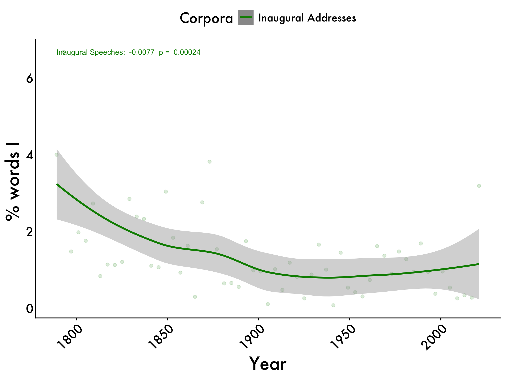
We
inaug_we <- lm(we_centered ~ year, data = tidy_df_Inaug)
inaug_we_pvalue <- summary(inaug_we)$coefficients[2, 4]
we_max <- max(tidy_df_Inaug$we_mean)
we +
geom_text(aes(x=1789, y=we_max, label=paste("Inaugural Speeches: ", format(coef(inaug_we)[2], digits=2), " p = ", format(inaug_we_pvalue, digits=2))),
color="green4", size=3,hjust = 0) 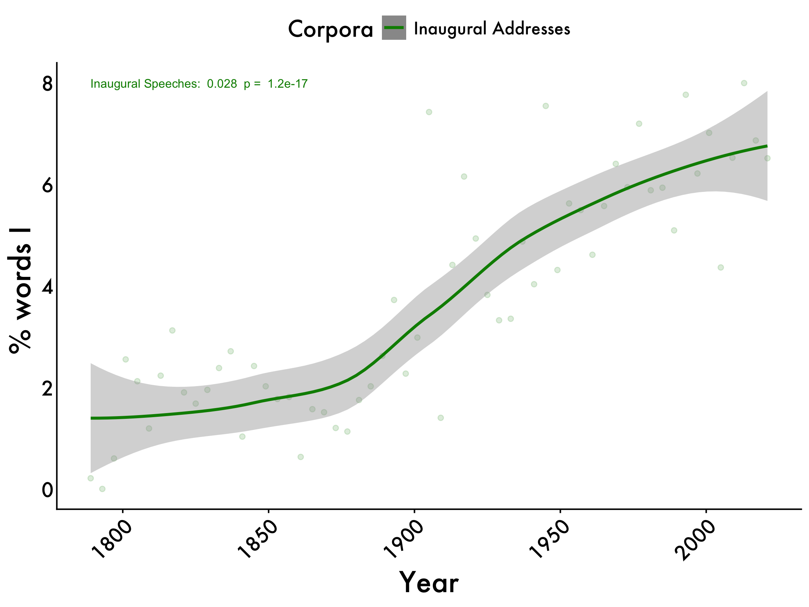
Pronouns
inaug_pronouns <- lm(pronoun_centered ~ year, data = tidy_df_Inaug)
inaug_pronouns_pvalue <- summary(inaug_pronouns)$coefficients[2, 4]
pronouns_max <- max(tidy_df_Inaug$pronoun_mean)
pronouns +
geom_text(aes(x=1789, y=pronouns_max, label=paste("Inaugural Speeches: ", format(coef(inaug_pronouns)[2], digits=2), " p = ", format(inaug_pronouns_pvalue, digits=2))),
color="green4", size=3,hjust = 0)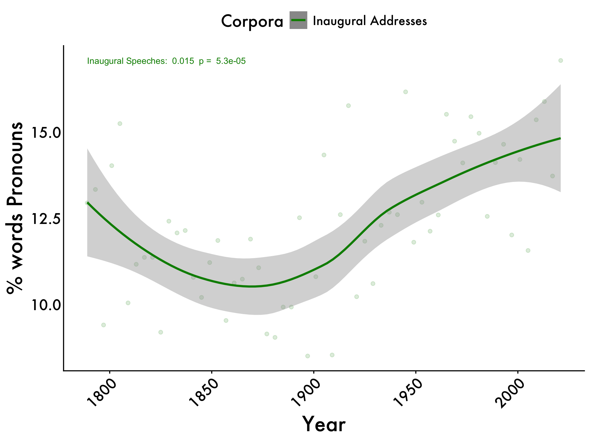
WPS
inaug_WPS <- lm(WPS_centered ~ year, data = tidy_df_Inaug)
inaug_WPS_pvalue <- summary(inaug_WPS)$coefficients[2, 4]
wps_max <- max(tidy_df_Inaug$WPS_mean)
WPS +
geom_text(aes(x=1789, y=wps_max, label=paste("Inaugural Speeches: ", format(coef(inaug_WPS)[2], digits=2), " p = ", format(inaug_WPS_pvalue, digits=2))),
color="green4", size=3,hjust = 0)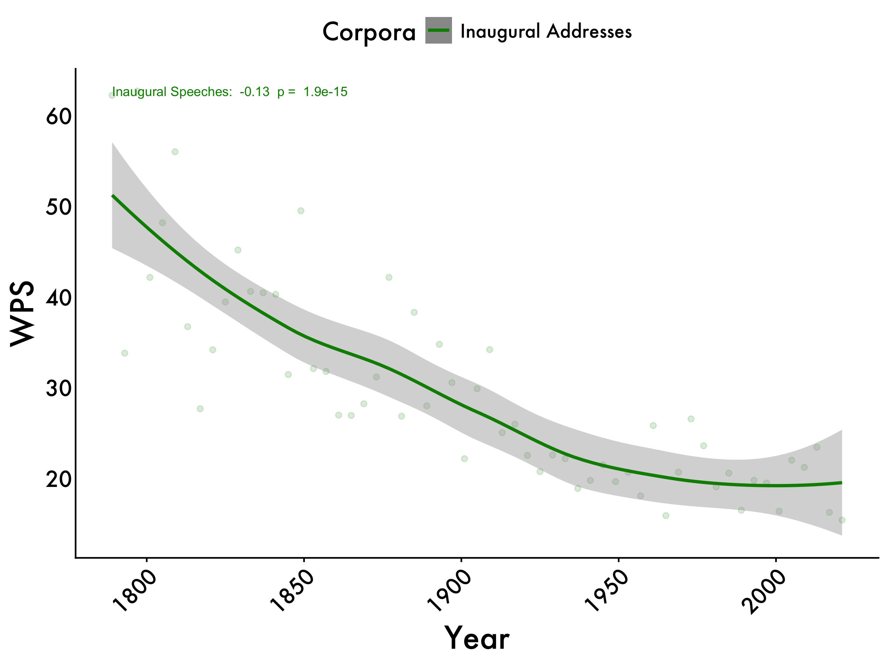
Determiners
inaug_determiners <- lm(det_centered ~ year, data = tidy_df_Inaug)
inaug_determiners_pvalue <- summary(inaug_determiners)$coefficients[2, 4]
det_max <- max(tidy_df_Inaug$det_mean)
determiners +
geom_text(aes(x = 1789, y = det_max, label = paste("Inaugural Speeches: ", format(coef(inaug_determiners)[2], digits = 2), " p = ", format(inaug_determiners_pvalue, digits = 2))), color = "green4", size = 3,hjust = 0) 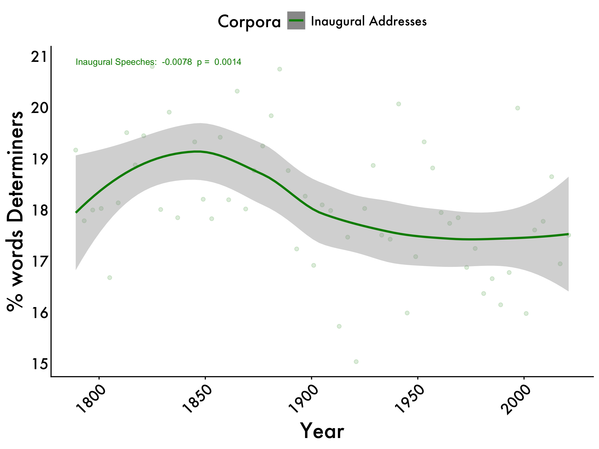
Possessives
inaug_possessives <- lm(pos_centered ~ year, data = tidy_df_Inaug)
inaug_possessives_pvalue <- summary(inaug_possessives)$coefficients[2, 4]
possessives_max <- max(tidy_df_Inaug$`% words POS possessive_mean`)
possessives +
geom_text(aes(x = 1789, y = possessives_max, label = paste("Inaugural Speeches: ", format(coef(inaug_possessives)[2], digits = 2), " p = ", format(inaug_possessives_pvalue, digits = 2))), color = "green4", size = 3, hjust = 0) 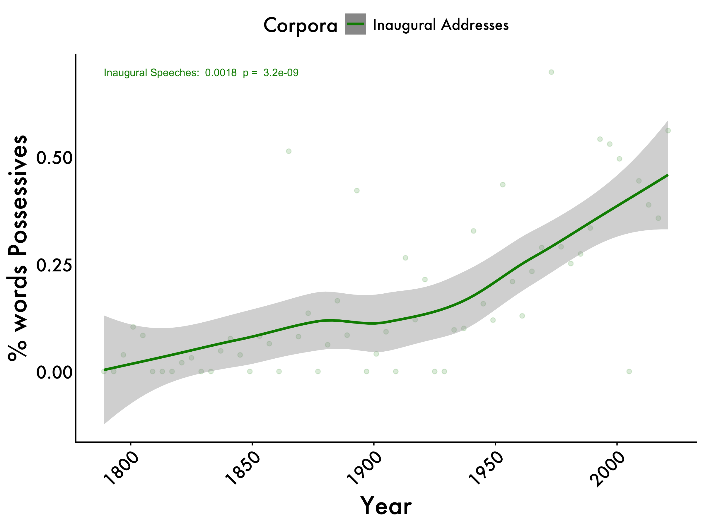
Of-usage
inaug_of <- lm(of_centered ~ year, data = tidy_df_Inaug)
inaug_of_pvalue <- summary(inaug_of)$coefficients[2, 4]
of_max <- max(tidy_df_Inaug$`% words 'of'_mean`)
of +
geom_text(aes(x = 1789, y = of_max, label = paste("Inaugural Speeches: ", format(coef(inaug_of)[2], digits = 2), " p = ", format(inaug_of_pvalue, digits = 2))), color = "green4", size = 3,hjust = 0)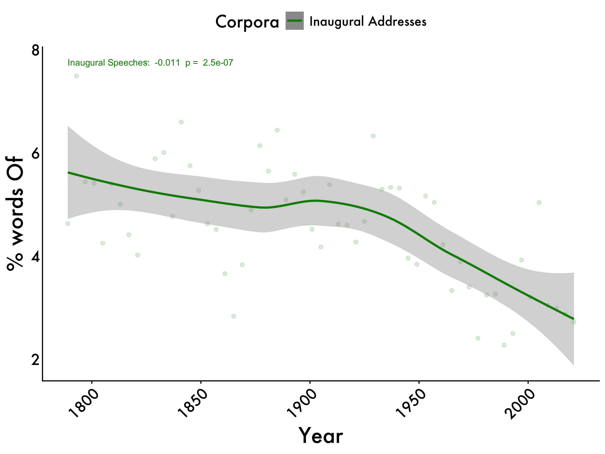
Contractions
inaug_contractions <- lm(con_centered ~ year, data = tidy_df_Inaug)
inaug_contractions_pvalue <- summary(inaug_contractions)$coefficients[2, 4]
cont_max <- max(tidy_df_Inaug$Contractions_mean)
contractions +
geom_text(aes(x = 1789, y = cont_max, label = paste("Inaugural Speeches: ", format(coef(inaug_contractions)[2], digits = 2), " p = ", format(inaug_contractions_pvalue, digits = 2))), color = "green4", size = 3,hjust = 0) 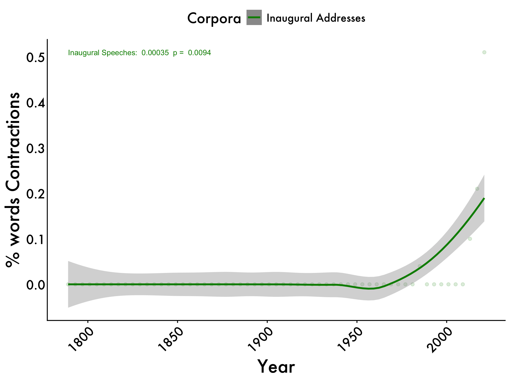
All Graphs
tidy_smooth_graphs <- ggpubr::ggarrange(i,we,pronouns, WPS,determiners, possessives, of, contractions,
ncol=4, nrow=2, common.legend = TRUE, legend = "top")
annotate_figure(tidy_smooth_graphs,
top = text_grob("LIWC Variables", color = "black", face = "bold", size = 20),
bottom = text_grob("Horizontal line represents Fisher Corpus", color = "black", size = 14))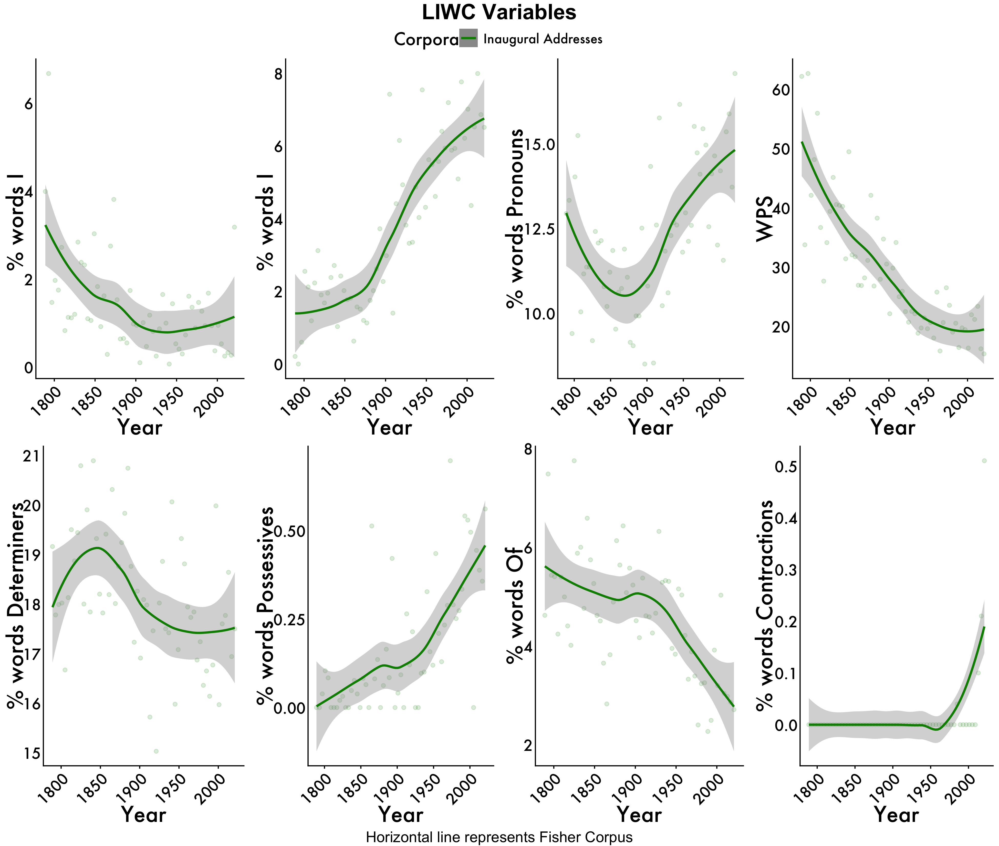